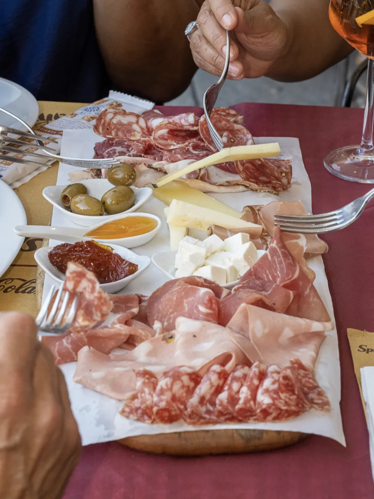

Piazza Anfiteatro 9, Lucca
Ti aspettiamo in piazza
Prenota per telefono, su WhatsApp o per email. Per gruppi e feste, scrivici prima.
- Dove
- Piazza Anfiteatro 9, 55100 Lucca
- Cellulare e WhatsApp
- 392 95 81 765
- info@dagherardo.com
- Posti
- 100 in piazza, 80 all'interno
- Orari
- Pranzo e cena

Come arrivare
Dentro le mura, nella piazza ovale
Piazza Anfiteatro è nel centro storico, a due passi da via Fillungo. Si entra dagli archi che si aprono sulla piazza.
Gruppi e feste
Una tavola per tutti
Prenotiamo per grandi gruppi e gite, feste di compleanno, comunioni e pensionamenti. Chiamaci o scrivici per organizzare.